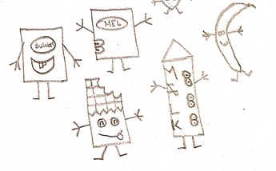
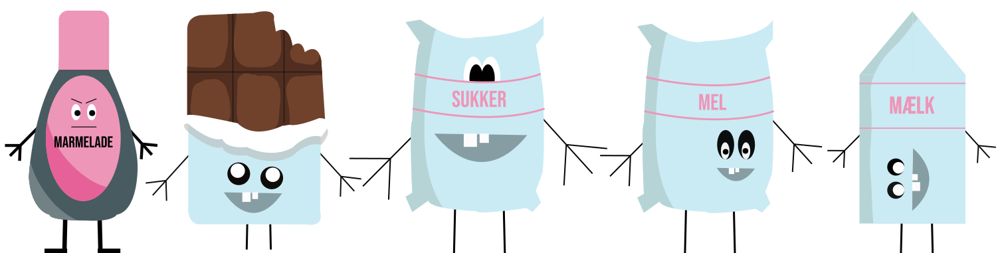
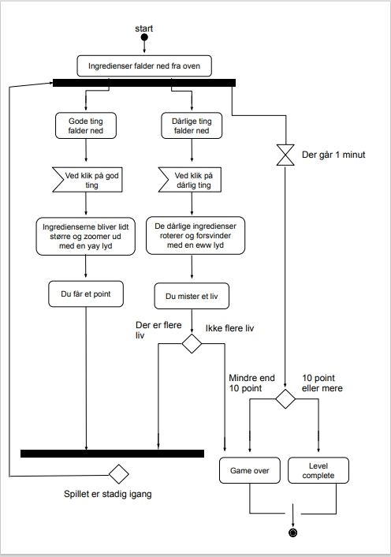
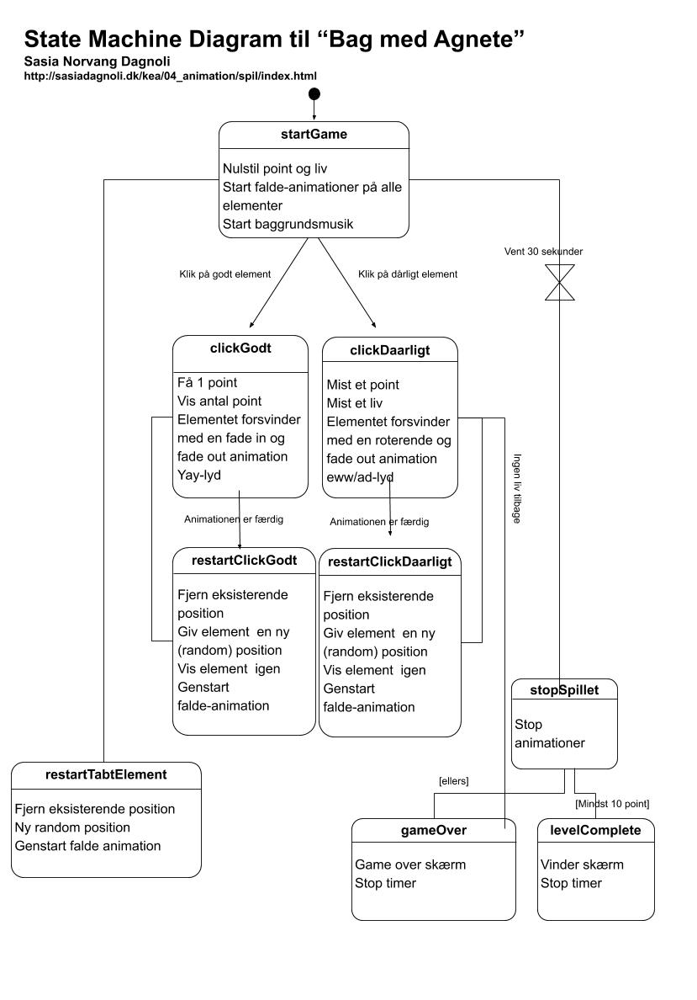

Spil - 04.05.01
I animationstemaet skulle vi lave et spil.
Jeg valgte at lave et bagespil, da jeg elsker at bage.
Mit spil hedder Bag med Agnete, og er et spil, hvor det går ud på at samle de rigtige ingredienser ind til en fødselsdagslagkage.
Men man skal undgå marmeladen, da fødselsdagsbarnet ikke kan lide marmelade.
Vi fik feedback af medstuderende, og efterfølgende valgte jeg at ændre på min marmelade figur, da jeg fik fortalt at den ikke så "ond" nok ud.
Prøv mit spil her
Proces
Skitse på figurer
Endelige figurer
Aktivitetsdiagram og state machine diagram


Liv
Taberskærm og vinderskærm